在今年的巴黎奥运会上，有中国网友注意到这一幕：
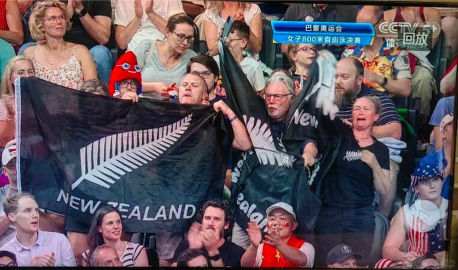
和其他国家观众不同，看台上的新西兰观众手里拿的不是新西兰国旗，而是黑白的银蕨旗帜。
“黑色的旗子？新西兰这是怎么了？”这个网友很疑惑。
在中国，黑白是不吉利的象征，看到黑色旗帜有不好的联想也正常。
下面一个评论指出重点：他们是为了不被误认为澳大利亚人。
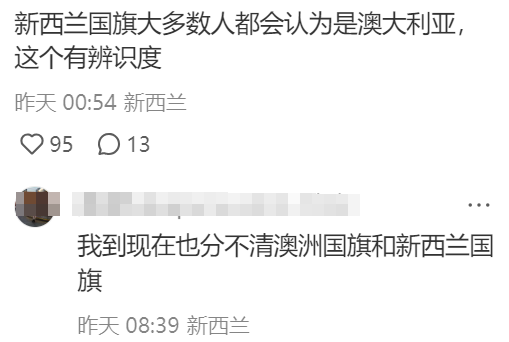
还有很多新西兰IP表示，来了多年都分不清两个国家的国旗。
因为它们“严重撞衫”：
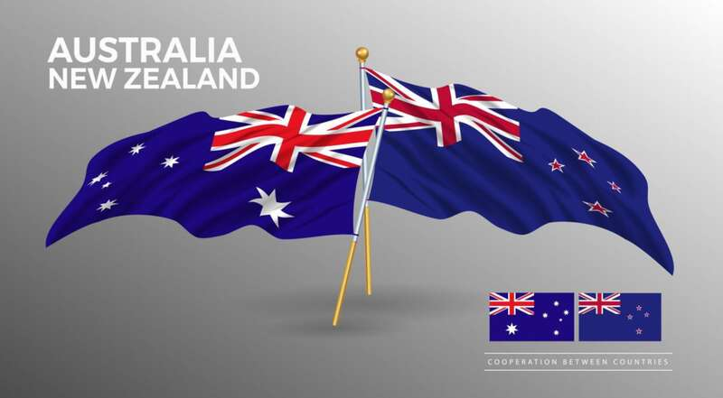
哪个是新西兰？哪个是澳大利亚？
因为总是被搞混，多年来两个国家都在讨论“更换国旗”的可能性。
01
澳大利亚主持人呼吁换国旗
此次奥运会期间，重提“换国旗”一事的是澳大利亚一名节目主持人Tom Elliott。
他指出，应该以“澳大利亚的典型象征”为基础设计新国旗。
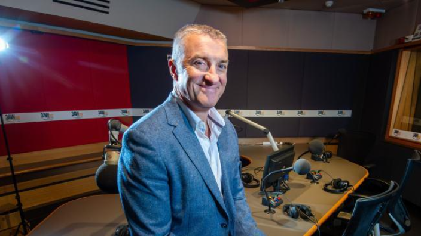
他说，奥运会期间，社交媒体上很多人出现了困惑。
“为什么我们的国旗是红、白、蓝三色，而我们的运动员穿的是绿色和金色？”
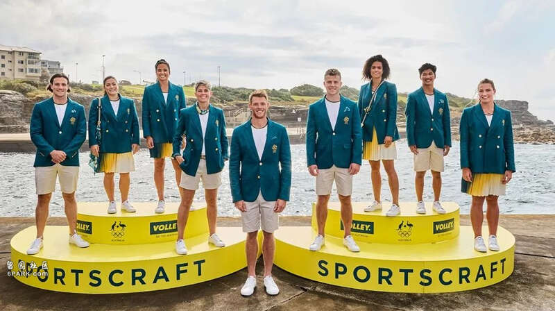
Elliott认为，澳大利亚国旗应该重新设计，“袋鼠是我们的典型象征，我认为一个合理的旗帜应该是以绿色为背景，中间是一只黄色的袋鼠。”
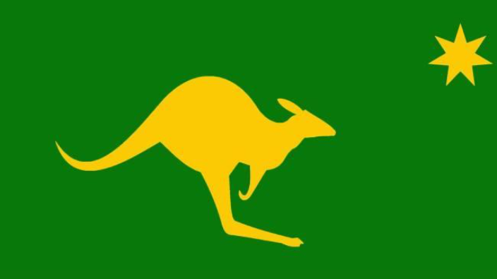
他还提到了新西兰也处于类似境地，国旗和澳大利亚高度相似，而运动员穿的是黑白色。
和观众席的黑白旗帜倒是很搭配。
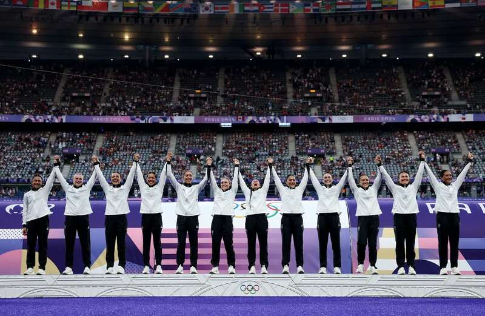
此事引起广泛讨论，网友们又开始给澳新两国重新设计国旗：
“何必搞那么复杂？这是我的提议。”
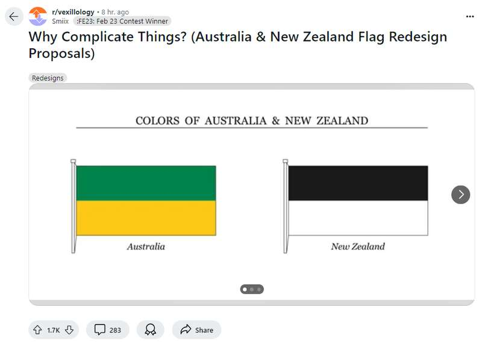
澳大利亚绿+黄，新西兰黑+白，主打一个简陋简约。
话虽如此，如果真的采用，好处是再也不会有人把两个国家搞混了。
因为国旗的事，澳新这些年相爱相杀，经常互相看不顺眼，动不动就撕X。
02
多次闹出“国际笑话”
几年前，有司机发现澳大利亚悉尼Anzac大桥上的新西兰国旗长得怪怪的。
那面旗帜上，新西兰特有的红色南十字星，最下面一颗星竟被放错位置了。
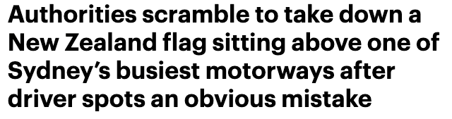
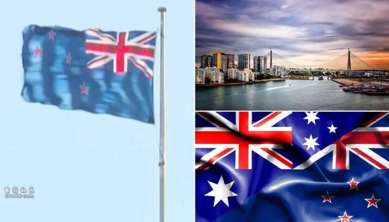
注意看左图4颗星的位置
在桥上挂了一个多月，终于有眼尖的司机发现，而新南威尔士州政府也在第一时间更换了旗帜。
对此，新西兰国旗协会的主席John Moody开喷：“可能是因为懒惰、无知，也有可能有人认为，新西兰国旗本来就和澳大利亚国旗很像。”
连本地人都不一定能百分百辨别，更别提其他国家的人了。
去年，在荷兰阿姆斯特丹机场的数字屏幕上，两国国旗被放反：
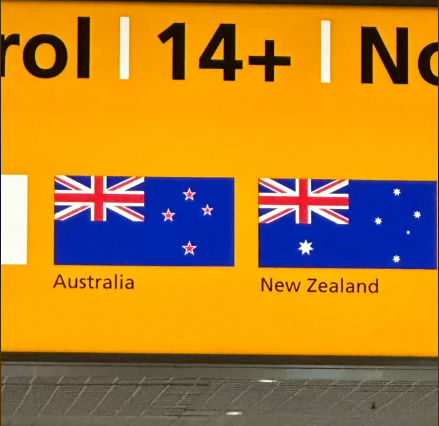
下面一位网友神评：“这是因为在北半球，一切都要反过来。”
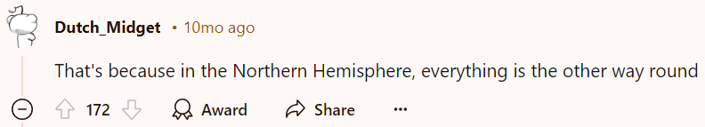
2016年里约奥运会，组织方在颁奖仪式上将澳新两国的国旗弄反了，场面一度非常尴尬！
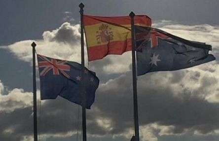
更早还能追溯到1984年，当时澳大利亚总理访问加拿大，没想到加方竟然拿出新西兰国旗欢迎他。
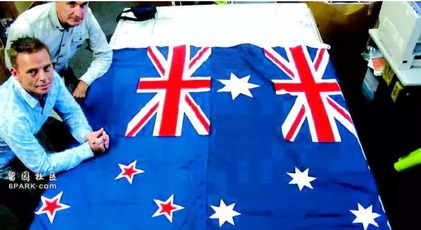
历史上，多位澳大利亚总理在参加国际会议时发现自己坐在新西兰国旗下，新西兰总理坐在澳大利亚国旗下。
乌龙闹太多，就有了这个问题：谁是“李逵”、谁是“李鬼”？
03
“抄袭我们的国旗，赶紧换”
2018年，时任代理总理Winston Peters公开指出，澳大利亚抄袭新西兰的国旗。
他说，“我们的国旗已经使用很久了，但被澳大利亚抄了。他们应该改变国旗，尊重我们先行者的设计。”
当时，NZ Herald开展的民意调查显示，62%的受访者支持这一呼吁。
对于新西兰的指责，澳大利亚方面表示：你们才是抄袭者！
其实，这是一笔糊涂账。
新西兰与澳大利亚都曾为英国的殖民地，在独立后，仍深受英国文化影响。
两国国旗都以英国国旗为基础，以示作为英联邦一份子，唯一的区别就是红色星和白色星。
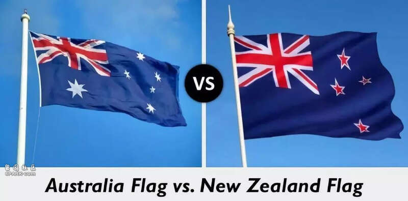
据CNN介绍，新西兰国旗早在1902年就被正式使用，这比澳大利亚现国旗于1954年才被正式承认早了50多年。
而澳大利亚表示，他们在1901年就设计出了这面旗帜，新西兰又提出自己才是最初设计者，并喊话澳大利亚：“不要再抄袭我们，赶紧换！”
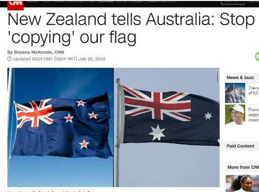
要求重新设计国旗的人还有另一个理由：澳新旗帜上的“米”字保留了过去殖民统治的痕迹，已经过时了。
2012年，在伦敦举行的夏季奥运会上，澳大利亚、新西兰国旗随着英国国旗升起的一幕非常经典。
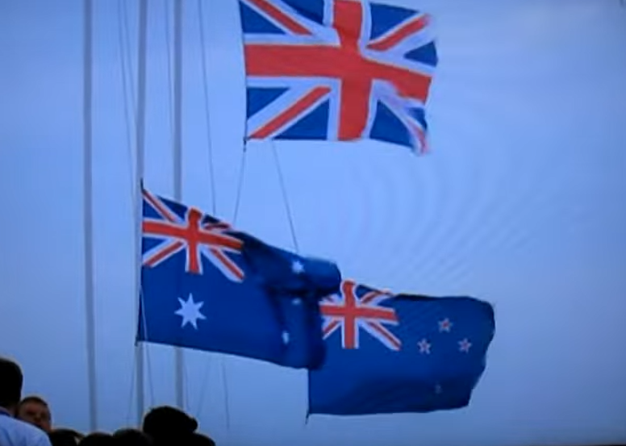
有人讽刺，“看起来就像两个卑躬屈膝的殖民地孩子仍然紧紧跟随英国母亲。成熟的国家不会与任何人分享他们的旗帜。”
04
新西兰曾经差点换国旗
新西兰前总理John Key是换国旗最大的推动者。
2015-2016年，新西兰就是否更改国旗进行全面公投。
当时审议项目官方小组邀请所有新西兰人为新国旗提出设计建议。
官方收到了一万多份投稿，包括但不仅限于这些：
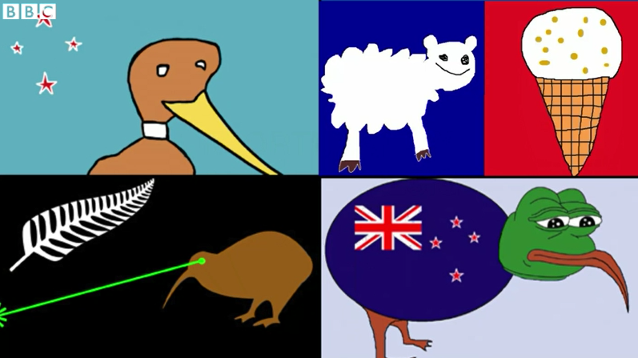
新西兰人发挥独特的幽默感，把国旗征集变成了“全民创作”。
其他作品：
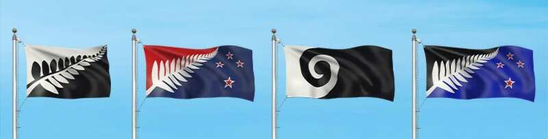
最终的胜利者是最后一个，当时全国各地都悬挂了这面旗帜。
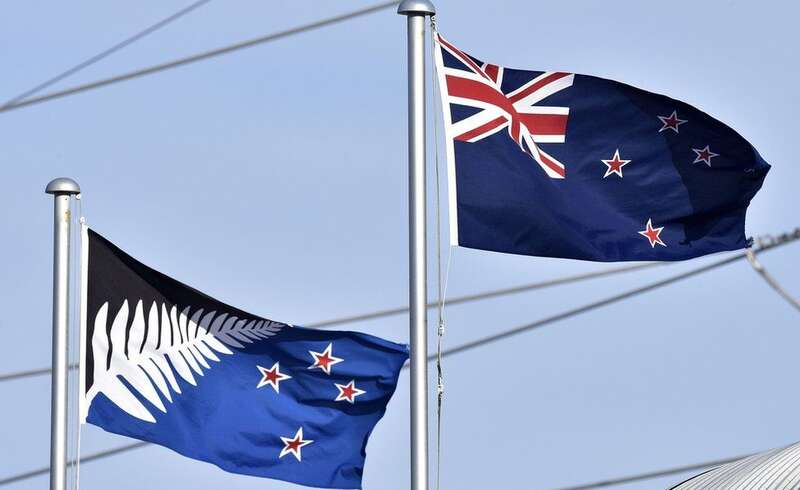
“新国旗运动”如火如荼，然而公投的结果是：56.7%的民众支持保留现用国旗，43.2%的支持新设计的“银蕨叶旗帜”。
59%的人谴责整个活动耗资2300万纽币，“浪费精力，浪费钱”。
虽然国旗没有换成，但这次活动也不是全无收获。
其中一幅参赛作品——激光眼奇异鸟在社交媒体上引起轰动，甚至有人发起请愿支持。
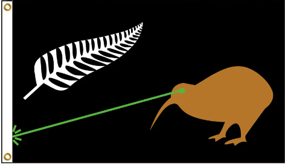
幸好可惜，它没有赢得最终的竞赛，不然可能就会有一幅眼睛射出绿色激光的奇异鸟旗帜和各国国旗飘荡在一起。
那个画面，想想就很美。
直到现在，“国旗之争”依然悬而未决，预计未来澳大利亚和新西兰还会因为此事吵架。